L機動戦士ガンダムSEED
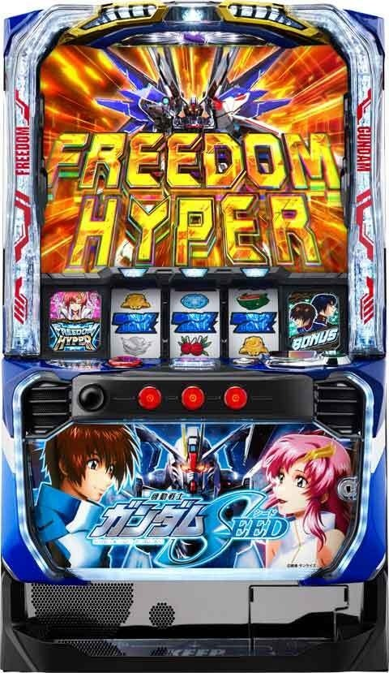

狙い目
【リセット狙い】
ST間天井狙い 180G
【ST間天井狙い】
駆け抜け後以外 730Gから（CZ間0G想定）
駆け抜け後 170Gから
※天国ループ中の場合はボーダーを70-80G下げる
【CZ間天井狙い】
500Gから
※天国モードに上がるまでモードが下がらないため、前回の当選履歴で狙い目変わるかも？
【ゾーン狙い】
100Gゾーン狙い
駆け抜け後 60Gから
駆け抜け後以外 45Gから
一撃1000枚以上後 30Gから
モードC以上濃厚時のST終了後 0Gから
上位後100G以内のCZかST当選が続いている台 0Gから（上位後に一度でも100Gを超えたらループは終わってそう。）
上位後1回目 30Gから
※天国は99GまでにCZかボーナス当選（当選履歴は90-100G）
※天国モードに上がるまでモードが下がらないため、前回の当選履歴で狙い目変わるかも？
【特殊モード狙い】
移行頻度不明。クルーゼ+赤文字は濃厚だが転落条件も不明。
現状はこういうモードがあるという事を覚えておく程度？
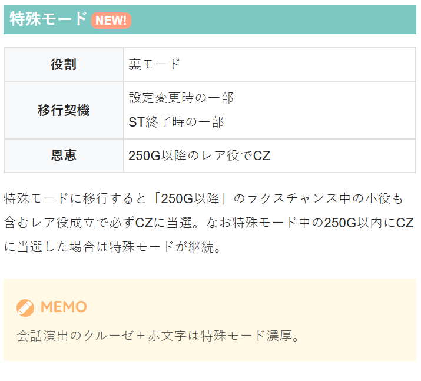
【有利区間関連狙い】
差枚+1500枚以上 0Gから天国確認まで
※上位AT突入のタイミングで有利切れしている可能性あるため上位AT非突入の台が良さそう。
※差枚+1000枚超えて上位ATに入っている台は有利切れしてる可能性高いと考えた方が良さそう。
やめ時
原則、ラストチャンス失敗後やめ。即前兆の有無は不明だが心配なら1-2G回して煽り無ければやめ。
ST終了時 キラ&アスランのアイキャッチ、オーブ連合首長国ステージスタートは天国確認。
ST終了時に砂漠ステージスタートはB以上濃厚。天国当選率は現状不明。気になるなら天国まで。気にせずやめても良さそう？（B以上濃厚に天国も含まれるか不明。40-50％天国当選するなら打つ価値あるかも）
天井狙い時に通常C以上濃厚確認の場合は、ST終了後に天国確認。
通常C濃厚単体についてはボーダーを下げる程度？
その他
モード示唆
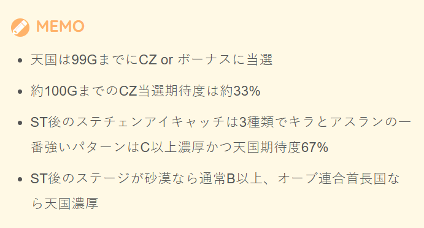
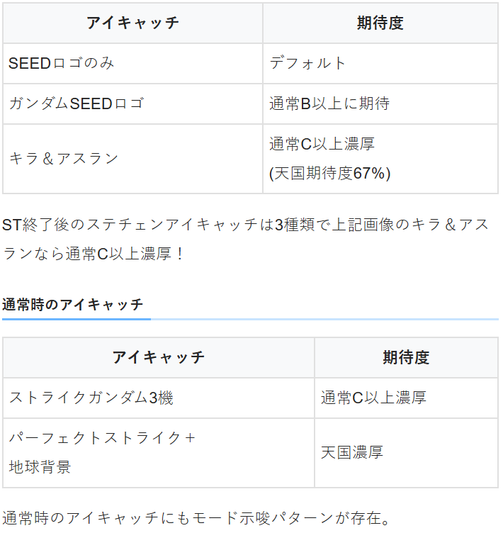
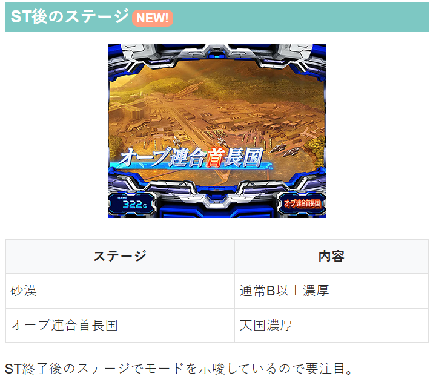
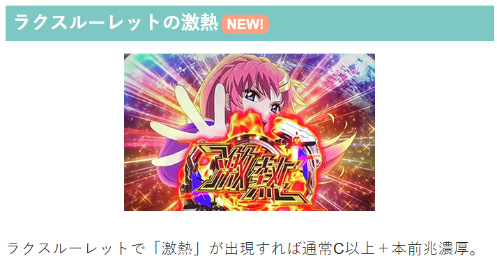
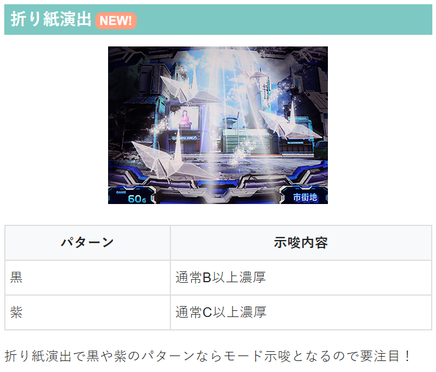
履歴の見方
CZ、ATの履歴
RB→CZ
ART→ST
18:16.18:36の履歴は、 778CZスルー258CZからST当選。
19:00CZからST当選し駆け抜け、20:14ARTは天井短縮でのST当選。
ST直撃時の駆け抜けはARTの粒が1つ。（ART1や2での当選履歴無し。20:14のSTは駆け抜けではないため注意）
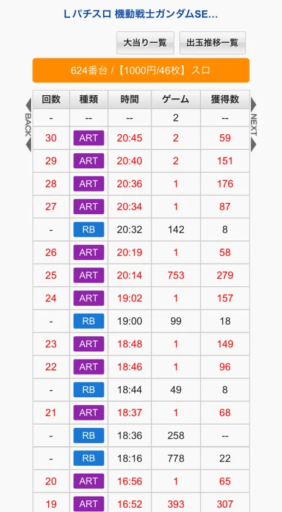
上位AT履歴
下記データ履歴の様にART2-5gの履歴は上位ATの信号と思われる。
上位ATと下位ATを行き来する感じなので2-5Gの履歴のある。
下記履歴のAT後は上位後となる。たまに6-9gの履歴があるけど何の信号か不明。
2Gの履歴で上位AT突入、3Gの履歴で下位ATに落ちてる感じ？
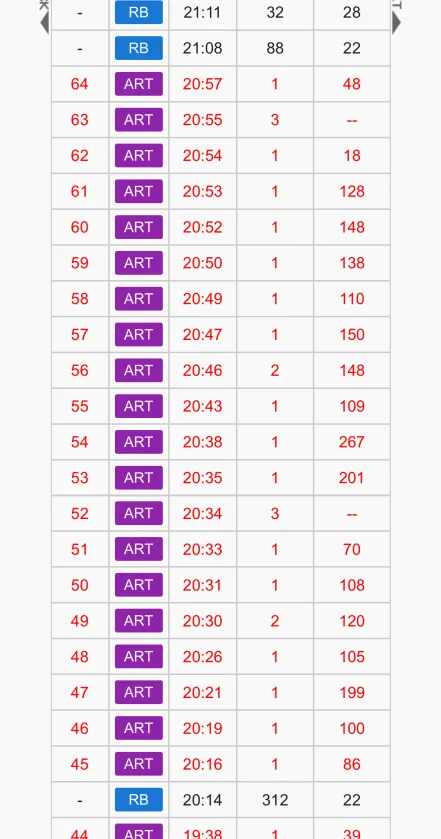
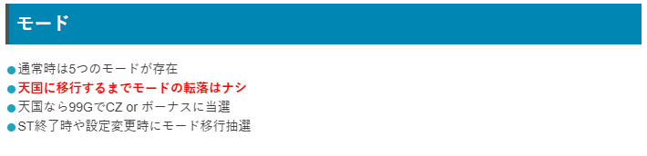
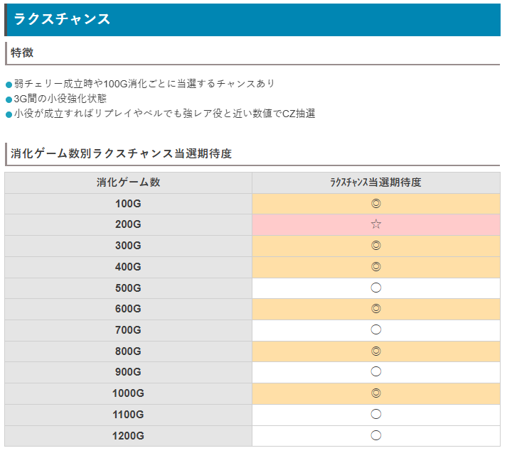
参考元
基本情報
- メーカー: ビスティ
- 機械割: 97.7% 〜 114.9%
- 導入開始日: 2025年05月07日（水）
- ゲーム性概要: ●大人気作品「機動戦士ガンダムSEED」がスマスロで登場！ ●AT当選のメイン契機であるCZは小役のヒキが重要 ●20G＋αのSTとボーナスのループで出玉を増やすゲーム性 ●上位ATは継続率約96%、期待枚数約3300枚と超強力!!


打ち方
打ち方・小役
打ち方（小役狙い）
左リール上段付近にBARを狙う。 左リールにスイカ停止時以外、中＆右リールはフリー打ちでOKだ。

「スイカ停止時」 中リールはBARを目安にスイカを狙おう。右リールはこぼしがないのでフリー打ちで問題ない。

「小役の停止例」 弱スイカは3枚、その他のレア役はすべてリプレイフラグ。

「ラクス狙いも楽しい」 左リール上段にラクスを狙い、ラクスが中段に止まった場合は小役以上の1確目になる。小役入賞がカギとなるCZ中やST中、リプレイのヒキが重要な上位AT中など、ここぞという場面でオススメだ。

変則押しはNG
通常時、押し順ナビなし時は左リール第1停止での消化を推奨する。

リーチ目／出目法則
出目法則

解析情報通常時
小役関連
小役確率
| 役 | 確率 |
|---|---|
| リプレイ | 1/9.0 |
| 共通ベル | 1/40.2 |
| スイカ | 1/128.0 |
| 弱チェリー | 1/128.0 |
| チャンス目 | 1/65.4 |
| 強スイカ | 1/512.0 |
| 強チェリー | 1/2048.0 |
※レア役合算確率は1/30.0、小役合算確率は1/5.9
CZ当選率
| 役 | 通常中 | 高確中 | 超高確中 |
|---|---|---|---|
| スイカ | 0.4% | 10.5% | 40.1% |
| チャンス目 | 0.4% | 5.4% | 40.1% |
| 強レア役A | 25.0% | 39.8% | 100% |
| 強レア役B | 39.8% | 100% | 100% |
| 強レア役C | 100% | 100% | 100% |
※強レア役A…強チェリー、強スイカ、ラクスチャンス中のベルorリプレイ ※強レア役B…ラクスチャンス中のチェリーorスイカorチャンス目 ※強レア役C…ラクスチャンス中の強チェリーor強スイカ
ラクスチャンス中の成立役も内部状態によって期待度が変化する。
モード
通常モード
通常時は5つのモードがあり、滞在モードに応じてCZ天井ゲーム数が変化。 モードは天国到達まで転落せず（有利区間リセット時を除く）、天国滞在時は99GでCZorボーナスのいずれかに当選する。
通常モード概要
| 項目 | 内容 |
|---|---|
| モードの種類 | 通常A・B・C/天国A・Bの5種類 |
| 天国移行率 | 通常A＜通常Bの順に天国へ移行しやすく、 通常Cは次回天国濃厚 |
| 天国のループ性能 | 天国A＜天国Bの順にループしやすい |
モードごとの特徴
| モード | 特徴 |
|---|---|
| 通常A | 基本的に滞在するモード |
| 通常B | 通常Aよりも天国移行率が高い |
| 通常C | 次回のモードは天国Aor天国B |
| 天国A | 99G以内のCZ濃厚、ループ性あり |
| 天国B | 99G以内のCZ濃厚かつ天国Aよりもループしやすく、 転落時は天国Aへ |
ボーナス直撃モード
初当り時の恩恵が BAR揃い or 上位AT直行 となる強力なモード。CZ失敗時やST終了時の一部でボーナス直撃モードへ移行の可能性がある。 示唆演出等がないため、基本的にボーナスに当選するまで判別はできないが、通常時にエピソードが発生するとBAR揃い or 上位AT濃厚になるので、ボーナス直撃モードに滞在していたかも!?
特殊モード
設定変更時やST終了時に移行する可能性があり、滞在時は 250G以降のチャンス目・スイカ・ラクスチャンスの小役入賞でCZに当選 する。 特殊モード滞在中の250G以内にCZに当選した場合は特殊モード継続。ボーナス直撃モードと複合することもあるので、250G以降のレア役でロングフリーズが発生といったケースもある。
ラクスチャンス
ラクスチャンス概要
100G消化ごとの抽選や、弱チェリー成立後に突入する3G間の小役強化状態。小役が入賞すればリプレイやベルでも強レア役相当の抽選（おもにCZ抽選）がおこなわれる。

ラクスチャンス性能
| 項目 | 内容 |
|---|---|
| 当選契機 | 弱チェリー成立時、100G消化ごとの一部 |
| 継続ゲーム数 | 3G |
| 消化中の抽選 | 小役入賞で強レア役相当の数値でCZを抽選 |
ゲーム数ごとのラクスチャンス当選期待度
| ゲーム数 | 期待度 |
|---|---|
| 100G | ◎ |
| 200G | ☆ |
| 300G | ◎ |
| 400G | ◎ |
| 500G | ◯ |
| 600G | ◎ |
| 700G | ◯ |
| 800G | ◎ |
| 900G | ◯ |
| 1000G | ◎ |
| 1100G | ◯ |
| 1200G | ◯ |
※期待度…◯＜◎＜☆
［ラクスランプ］ ラクスチャンス中は、リール左のラクスランプが点灯する。

「ループ性あり」 ラクスチャンス終了時にラクスチャンスのループを抽選していて、ループ当選時は毎ゲーム約1/8でラクスチャンスに当選。当選時は前兆を経由して告知され、ループ後も再度ループする可能性がある。
ストライクアタック（CZ）
CZ概要
18G間、1Gずつマスを移動していき、小役が入賞すればHITマスを獲得。 HITマスが横or縦で2つ並ぶとボーナスが抽選 さ れる。 ATTACKマスは小役揃い濃厚のマスで、レア成立時はHITマス獲得かつ、ATTACKマスの増加を抽選。 ボーナス当選後もゲーム数が残っていればCZは継続し、成功のたびに報酬が昇格していく。

ストライクアタック性能
| 項目 | 内容 |
|---|---|
| 契機 | レア役での抽選、規定ゲーム数到達時 |
| 継続ゲーム数 | 18G |
| 成功期待度 | 約62% |
| 消化中の抽選 | 小役入賞でHITマスを獲得し、 HITマスが2つ並ぶとボーナスを抽選 |
| その他 | レア役はHITマス獲得かつATTACKマス増加抽選、 ボーナス当選後はボーナス種別の昇格を抽選 |
CZ確率
| 設定 | 確率 |
|---|---|
| 1 | 1/362.2 |
| 2 | 1/377.3 |
| 3 | 1/349.1 |
| 4 | 1/309.7 |
| 5 | 1/301.6 |
| 6 | 1/266.9 |
「小役入賞でHITマス獲得」

「ATTACKマス」 リプレイやレア役を引いた場合はもちろんHITマスを獲得。いずれも引けなかった場合でも、押し順ナビが発生してベル揃いが出現するので、必ずHITマスを獲得できる。

「HITマスが並ぶとボーナスを抽選」 横並びor縦並び（シングル揃い）、横＆縦並び（ダブル揃い）の2パターンが存在。ダブル揃いの方がボーナス期待度が高い。

「ラクスが揃えばボーナス」 HITが並んだ後は、狙えカットインが発生。ラクスが揃えばボーナス当選となる。 カットインの色は青＜緑＜赤の順にチャンスだ。

「報酬の昇格」 初回のラクス揃い時は基本的にSEEDボーナス（青7揃い）の権利を獲得。CZはゲーム数が残っている限り継続し、ラクスが揃うたびに報酬が昇格していく（SEEDボーナス＜赤7BIG＜BAR BIGの順）。 BAR BIGまで昇格した段階でボーナス確定画面へ移行。BAR BIG時はフリーズが発生して上位ATへ直行するパターンもある。

「マス配置パターンの優遇」 マスの配置パターンは複数あり、CZ中に一度も狙えカットインが発生しなかった場合、次回CZでの配置パターンが優遇される。

「リザルト画面のレア役」 リザルト画面でレア役を引けばボーナス濃厚。強レア役は赤7BIG濃厚だ。

ボーナス当選率（狙え成功率）
| HITパネルの並び | レア役ナシ | レア役アリ |
|---|---|---|
| 左右or上下シングル揃い | 29.4% | 40.0% |
| ダブル揃い | 40.7% | 100% |
レア役契機で獲得したパネルを含んでいると、期待度がアップする。レア役2連や強レア役はボーナス濃厚だ。
マス配置パターンのシナリオ
シナリオは全部で6種類。CZ中に一度も狙えカットインが発生しなかった場合、次回CZで上位（ATTACKマスが多い）のシナリオが選ばれやすくなる。

ロングフリーズ抽選
報酬がBAR揃いまで昇格した状態のボーナス確定画面移行時にロングフリーズを抽選。当選時はロングフリーズを経由して上位ATへ直行する。 抽選は全役でおこなわれるが、弱レア役成立で期待度約50%、強レア役ならロングフリーズ発生濃厚となる。

フリーズ
ロングフリーズ動画
上位AT直行時にロングフリーズが発生。
通常時だけでなく、CZでBAR揃いまで昇格させた後の一部でも発生する。
解析情報ボーナス時
SEEDボーナス/BIGボーナス
ボーナス概要
青7揃いがSEEDボーナス、赤7揃いとBAR揃いはBIGボーナス。どのボーナスも消化中は押し順ベル以外の小役で宿命ポイント獲得を抽選し、100ptに到達すると宿命ゾーン（上位ATをかけたCZ）へ突入する。 基本的にポイントはST継続失敗まで持ち越されるため、何度もボーナスに当選させて宿命ゾーン成功を目指そう。

BIGボーナス性能
| 項目 | 内容 |
|---|---|
| 契機 | CZ成功、初当り時の一部、ST成功 |
| 獲得枚数 | 約100or200or300枚 |
| 1Gあたりの純増 | 約6.5枚 |
| 消化中の抽選 | 押し順ベル以外の小役で宿命ポイントを獲得、 100pt獲得で宿命ゾーンへ |
100ptに到達した時点で宿命ゾーンに突入。宿命ゾーン終了後は成否にかかわらず、ボーナスへ復帰する。
ボーナスごとの獲得枚数
| 揃った絵柄 | 獲得枚数 |
|---|---|
| 青7（SEEDボーナス） | 約100枚 |
| 赤7（BIGボーナス） | 約200枚 |
| BAR（BIGボーナス） | 約300枚 |
純粋に獲得枚数が多いボーナスほど継続ゲーム数が長いので、宿命ポイントが貯まりやすい。
「宿命ポイント獲得」 一気に大量ポイントを獲得する場合もある。

ストライクライド
ストライクライド（ST）概要
20G＋αのST。成立役に応じて抽選される「瞬間決着バトル」に勝利することでボーナス当選となる。 リプレイやベル揃い時はおもにSTゲーム数の減算が2〜5G間ストップするホールドに当選。ホールド中のリプレイやベル揃いは、非ホールド中に比べて瞬間決着バトル当選のチャンス、レア役はホールド状態不問で瞬間決着バトル当選濃厚だ。 STゲーム数消化後はラストチャンス（3G）で成立役に応じた引き戻し抽選がおこなわれる。

ストライクライド（ST）性能
| 項目 | 内容 |
|---|---|
| 契機 | ボーナス終了後、上位AT終了後 |
| 継続ゲーム数 | 20G＋ホールド分（平均36G継続） |
| リプレイor ベルの抽選 | 瞬間決着バトルorSTゲーム数ホールド ホールド中は瞬間決着バトル当選率アップ |
| レア役の抽選 | 瞬間決着バトル以上濃厚 |
| 瞬間決着バトル中の 抽選 | 3G以内に小役入賞でボーナス濃厚 |
| 瞬間決着バトル 勝利期待度 | 約50% |
| ラストチャンス中の 抽選 | 3G間、小役入賞でボーナス抽選、 レア役はボーナス濃厚 |
| ラストチャンスの 引き戻し期待度 | 約21% |
「ホールド」 ホールド中はステージが変化。ミッションが発生した場合はクリアで瞬間決着バトル当選となる。

「瞬間決着バトル」 3G間のバトル。小役入賞でボーナス濃厚だ。 バトル当選時の一部でBAR BIG濃厚のエピソードが発生することもある。

［エピソード］

「2択チャンス」 ST中の1/43.7で発生。押し順当てに成功し、小Vリプレイが止まればレア役扱いとなり、瞬間決着バトルに当選する。

「ラストチャンス」 レア役を引けばボーナス濃厚。ナビ矛盾やデカナビ、告知音など、違和感系の演出が発生しやすい。


［ホールド中］瞬間決着バトル当選率
| 抽選結果 | リプレイ ベル | 弱レア役 | 強レア役 |
|---|---|---|---|
| 瞬間決着バトル | 17.5% | 95.8% | ー |
| 勝利濃厚の 瞬間決着バトルorエピソード | ー | 4.2% | 100% |
非ホールド中のリプレイやベルでも瞬間決着バトル抽選はおこなわれるが、当選率は低め。レア役やホールド中のリプレイ・ベルが瞬間決着バトル当選のメイン契機になる。 最終ゲームは小役を引けなくても 34.1% で瞬間決着バトルに当選する。
引き戻し当選率
| 役 | 当選率 |
|---|---|
| 押し順ナビ | 26.6% |
| リプレイ・ベル | 30.1% |
| レア役 | 100% |
レア役は引き戻し濃厚。リプレイやベルでも約30%で引き戻しとなる（引き戻し＝ボーナス）。
宿命ゾーン
宿命ゾーン概要
ボーナス中に宿命ポイントを100pt獲得すると突入する5GのCZ。成功すれば上位AT突入をかけたストライクバーストへ突入する。

宿命ゾーン性能
| 項目 | 内容 |
|---|---|
| 契機 | 宿命ポイント100pt獲得時 |
| 継続ゲーム数 | 5G |
| 消化中の抽選 | SEED目停止でストライクバーストへ |
| 成功期待度 | 60.6% |
「中リール狙え」 赤カットインなら大チャンス！

ストライクバースト
ストライクバースト概要
上位AT突入をかけたCZで、前半パート（5G）と後半パート（5G）の両方をクリアすることで上位AT突入濃厚となる。 ストライクバーストに突入した時点で最低でも青7BIGの権利を獲得するので、失敗してもボーナスに突入する。

ストライクバースト性能
| 項目 | 内容 |
|---|---|
| 契機 | 宿命ゾーン成功 |
| 継続ゲーム数 | 前半パート5G＋後半パート5G（最大10G） |
| 消化中の抽選 | 前後半ともに小役で成功を抽選、 強レア役成立時は上位ATへ直行 |
| 前半失敗時 | 青7BIG |
| 前半成功→後半失敗時 | 赤7BIGorBAR BIG |
| 後半成功時 | 上位AT |
「前半パート」

「後半パート」

前半・後半パートともに毎ゲーム成功抽選をおこない、最終ゲーム（5G目）は小役入賞で成功濃厚。強レア役はどのタイミングで引いても上位ATへ直行する。
上位AT抽選
ストライクバーストは基本的に青7揃い濃厚状態から始まり、消化中の小役でボーナス種別の昇格を抽選。前半パート中は赤7揃い以上へ昇格させれば後半パートへ移行する。後半パートも同様に小役で昇格抽選をおこない、最終的に到達したボーナスor上位AT突入だ。
青7揃い濃厚状態 ・ボーナス昇格当選率 1～4G目
| 役 | 赤7揃いへ昇格 | 上位AT直行 |
|---|---|---|
| 下記以外 | ー | ー |
| リプレイ・ベル | 35.3% | ー |
| 弱レア役 | 44.7% | ー |
| 強レア役 | ー | 100% |
5G目
| 役 | 赤7揃いへ昇格 | 上位AT直行 |
|---|---|---|
| 下記以外 | 24.4% | ー |
| リプレイ・ベル | 100% | ー |
| 弱レア役 | 100% | ー |
| 強レア役 | ー | 100% |
赤7揃い濃厚状態 ・ボーナス昇格当選率 前・後半パート共通の1～4G目
| 役 | BAR揃いへ昇格 | 上位AT直行 |
|---|---|---|
| 下記以外 | ー | ー |
| リプレイ・ベル | 24.3% | 24.3% |
| 弱レア役 | 51.5% | 48.5% |
| 強レア役 | ー | 100% |
前半パートの5G目
| 役 | BAR揃いへ昇格 | 上位AT直行 |
|---|---|---|
| 下記以外 | ー | 5.0% |
| リプレイ・ベル | 51.1% | 48.9% |
| 弱レア役 | ー | 100% |
| 強レア役 | ー | 100% |
後半パートの5G目
| 役 | BAR揃いへ昇格 | 上位AT直行 |
|---|---|---|
| 下記以外 | ー | 5.0% |
| リプレイ・ベル | ー | 100% |
| 弱レア役 | ー | 100% |
| 強レア役 | ー | 100% |
BAR揃い濃厚状態 ・上位AT当選率
| 役 | 前・後半パート共通の 1～4G目 | 前・後半パート共通の 5G目 |
|---|---|---|
| 下記以外 | ー | 5.0% |
| リプレイ・ベル | 48.9% | 100% |
| 弱レア役 | 100% | 100% |
| 強レア役 | 100% | 100% |
フリーダムハイパー（上位AT）
上位AT概要
1セット10G継続のセット管理型AT。共闘状態・単騎状態・ピンチゾーン・ファイナルジャッジで構成され、すべてをトータルしたループ期待度は約96%と超強力だ。 消化中はおもにレア役でVストック獲得を抽選していて、1契機で複数ストックを獲得する可能性あり（初回突入時はストック1個以上保有）。 小役入賞時に獲得していく連撃ポイントが1000ptに到達すると「フルバーストチャレンジ（枚数決定ゾーン）」を経由してボーナスへ突入する。

フリーダムハイパー（上位AT）性能
| 項目 | 内容 |
|---|---|
| 契機 | ストライクバースト成功、初当りの一部 |
| 継続ゲーム数 | 10G/セット |
| 1Gあたりの純増 | 約6.5枚 |
| ループ期待度 | 約96% |
| 消化中の抽選 | Vストック抽選、連撃ポイント抽選 |
| 期待枚数 | 約3300枚 |
| 終了後 | ストライクライド（ST）へ |
「共闘状態」 フリーダムハイパーのメインパートで、フリーダムとジャスティスが共闘。10G継続後、Vストックがあれば継続、ない場合はフリーダムのみの単騎状態へ移行する。

［Vストック］ 1契機で複数ストックを獲得する可能性あり。

［連撃ポイント］ レア役成立時や小役が連続して入賞すると多くのポイントを獲得できる。

「単騎状態」 継続ゲーム数は不定。リプレイやレア役を引けば共闘ゾーンへ復帰、ハズレ目が停止するとピンチゾーンへ（ハズレ目確率1/5.44）。 単騎状態中も連撃ポイント抽選あり。

「ピンチゾーン」 単騎状態と同じく、ハズレ目よりも先にリプレイやレア役を引けば共闘ゾーンへ復帰。ハズレ目が出現するとファイナルジャッジ移行となる（ハズレ目確率1/5.44）。

「ファイナルジャッジ」 3G間の引き戻しゾーン。いずれかの小役が入賞すれば共闘ゾーンへ復帰（レア役での引き戻し時はVストックも獲得）する。最終ゲームでフリーズが発生することも!? 引き戻しに失敗してもストライクライド（ST）へ移行する。

連撃ポイント抽選
連撃が続くほどポイントの獲得量がアップ。15連以上で最低10pt、30連以上で最低20ptというように、段階的にアップしていく。 レア役は30pt以上濃厚かつ、Vストックも抽選される。

Vストック抽選
上位AT初当り時は1個以上のVストックを獲得（ロングフリーズ経由時は5個）。上位AT中のレア役やエピソードボーナス突入時に、Vストック獲得を抽選する。
共闘状態中＆エピソードボーナス中・Vストック当選率
| 役 | 当選率 |
|---|---|
| 弱レア役 | 約50% |
| 強レア役 | 100% |
共闘状態中＆エピソードボーナス中・ Vストック獲得時の個数振り分け
| 個数 | 弱レア役 | 強レア役 |
|---|---|---|
| 1個 | 89.8% | 50.0% |
| 2個 | 7.0% | 25.0% |
| 3個 | 3.2% | 25.0% |
単騎状態orピンチゾーンからレア役での復帰時・ Vストック個数振り分け
| 個数 | 弱レア役 | 強レア役 |
|---|---|---|
| 1個 | 98.4% | 50.0% |
| 2個 | 0.8% | 25.0% |
| 3個 | 0.8% | 25.0% |
エピソードボーナス突入時・ Vストック獲得時の個数振り分け
| 個数 | 振り分け |
|---|---|
| 1個 | 33.3% |
| 2個 | 33.3% |
| 3個 | 33.3% |
※ストック抽選に当選した場合の振り分け
ファイナルジャッジ・引き戻し当選率
| 役 | 1～2G目 | 3G目 |
|---|---|---|
| ハズレ目 | ー | 27.3% |
| 小役入賞 | 100% | 100% |
復帰した場合はVストックを獲得。3G間のトータル引き戻し期待度は約58%になる。
フルバーストチャレンジ＆エピソードボーナス
フルバーストチャレンジ
フリーダムハイパー中の連撃ポイント1000pt到達で突入。全役で枚数を抽選し、獲得した枚数を持ってエピソードボーナスへ移行する。

フルバーストチャレンジ性能
| 項目 | 内容 |
|---|---|
| 契機 | フリーダムハイパー中の連撃ポイント1000pt到達 |
| 消化中の抽選 | 成立役に応じてボーナス枚数を決定 |
| 枚数 | 100～1000枚 |
「枚数告知」


エピソードボーナス
フルバーストチャレンジで決定した枚数を消化する区間。消化中はフリーダムハイパーのVストック獲得が抽選される。


ボーナス枚数抽選

レア役成立時のボーナス枚数
| 役 | 枚数 |
|---|---|
| 弱レア役 | 200枚以上濃厚 |
| 強レア役 | 1000枚濃厚 |
チャンスアップ発生時やデカPUSHボタン出現時は300枚以上濃厚だ。
ツラヌキ・有利区間
ツラヌキ条件と恩恵
| 項目 | 内容 |
|---|---|
| 条件 | エンディング到達時 |
| 恩恵 | ラストフェーズミッションへ |
基本的には上位AT中にエンディングを迎えるケースが多いが、ボーナス中（STループ中）に有利区間の枚数が少なくなった場合も、エンディングが発生してラストフェーズミッションへ移行する。
［ラストフェーズミッション］ 内部的には上位ATのラストで突入するファイナルジャッジと同じで、3G以内に小役が入賞すれば上位ATへ突入（引き戻し期待度は約43%）。レア役を引けば引き戻し＋Vストック獲得も濃厚だ。最終ゲームは小役が揃わなくても成功の可能性があり、失敗してもストライクライドへ移行する。

演出情報
通常時
ステージ解説
| ステージ | 示唆 |
|---|---|
| 市街地 | デフォルト |
| 湾岸 | デフォルト |
| 砂漠 | 高確示唆 |
| オーブ連合首長国 | 高確示唆 |
| ストライクガンダム | 超高確示唆 |
［市街地］

［湾岸］

［砂漠］

［オーブ連合首長国］

［ストライクガンダム］

アークエンジェルアタックの演出法則
CZの前兆ステージ。エリアアップが発生し、色が昇格するほど本前兆期待度がアップ。ラストは連続演出でCZの当否を告知する。

［エリアアップ］


演出法則
| 演出 | 法則 |
|---|---|
| エリア1から 2への昇格 | ● ストライクの画面斬り演出経由がデフォルト ● その他の演出で昇格した場合はVSディアッカ以上濃厚 |
| 援護攻撃 | ● ゴッドフリート：レア役否定でエリア昇格濃厚 ● ローエングリン：エリア昇格期待度アップかつCZ期待度アップ。昇格しなければ CZ濃厚 |
［ストライク画面斬り］

モード示唆演出
| 演出 | 内容 |
|---|---|
| ステージチェンジ | ● タイトルロゴ：通常B以上の可能性アップ ● タイトルロゴ＋キラ＆アスラン：通常C以上濃厚（通常C：約33%、天国A or B：約67%） |
| アイキャッチ | ● 3分割画面にガンダム：通常C以上濃厚 ● ストライクガンダム： 天国濃厚 |
| 折り紙 | ● 黒の鶴：通常B以上濃厚 ● 紫の鶴：通常C以上濃厚 |
| ラクス激熱ロゴ | ● CZ本前兆かつ、通常C以上濃厚 |
| 会話演出 | ● クルーゼの赤文字： 特殊モード濃厚 |
| ST後のステージ | ● 砂漠：通常B以上濃厚 ● オーブ連合首長国： 天国濃厚 |
| ST後の前兆 | ● 66Gから前兆が発生しない：通常B以上濃厚 |
［ステージチェンジ：デフォルト］

［ステージチェンジ：タイトルロゴ］

［ステージチェンジ：タイトルロゴ＋キラ＆アスラン］

［ラクス系の演出］ ラクス系の演出（ルーレットなど）で激熱のロゴが出現すれば、CZ本前兆かつ通常C以上濃厚となる。

ストライクアタック
演出法則
| 演出 | 法則 |
|---|---|
| 発展先の矛盾 | ● BET時にイザークが出現したのにニコルに攻撃がHITするなど、対戦相手が矛盾すれば BAR揃い濃厚 |
［対戦相手］ BET時に登場した敵とのバトルで、小役の連続を示唆。対戦相手が矛盾すればBAR揃い濃厚だ。

ボーナス
宿命ゾーン中の狙え期待度

狙え成功期待度
| 色 | 期待度 |
|---|---|
| 青 | 約20% |
| 緑 | 約40% |
| 赤 | 100% |
レバーON時、リール回転開始時にあおりナシでいきなり狙えが発生した場合は、色不問でSEED目停止濃厚だ。
ストライクライド
ストライクライド中の演出法則
| 契機・演出 | 法則 |
|---|---|
| 小役入賞時 | ● PUSHボタンを長押しして告知が発生すれば瞬間決着バトル以上濃厚 ● ステージ移行しなければ瞬間決着バトル以上濃厚 |
| 波紋演出 | ● GUNDAMの文字が出現すれば瞬間決着バトル以上濃厚（エピソードの期待大） |
［波紋演出］

瞬間決着バトル中の演出法則
| 演出 | 法則 |
|---|---|
| タイトル色 | ● 赤：成功時のBAR揃い期待度アップ ● 金：成功かつ BAR揃い濃厚 |
| 「君を討つ！」 | ● 勝利期待度約70% |
| ラクスランプ | ● ゆっくり明滅がデフォルト、点灯しっぱなしなら勝利時のBAR揃い期待度アップ |
| 赤タイマー | ● デバイス系の演出と複合すれば 赤7揃い以上濃厚 ● 下パネル消灯・風・バイブと複合すれば BAR揃い濃厚 |
デバイス系の演出一覧
| No. | 法則 |
|---|---|
| 1 | 停止ボタンフリーズ |
| 2 | 擬似遊技発生（第1停止時に赤7までスベってくる） |
| 3 | ボーナスランプ一瞬点滅 |
| 4 | レバーON時・リール回転開始時に上部ランプ点灯 |
| 5 | 下パネル消灯（赤7揃い以上濃厚） |
| 6 | 風（赤7揃い以上濃厚） |
| 7 | バイブ（赤7揃い以上濃厚） |
赤タイマーとデバイス系演出が複合すれば赤7揃い以上濃厚。下パネル消灯・風・バイブの3つが赤タイマーと複合すればBAR揃い濃厚となる。 赤タイマーでなくとも、デバイス系が複合して発生した場合はボーナス濃厚だ。
［赤タイトル］

ラストチャンス中の演出法則
| 演出 | 法則 |
|---|---|
| 小役ナビ | ● ナビハズレや小役矛盾で ボーナス濃厚 ● ダブルナビ時は左がレア役なら激アツ ● レア役の単独ナビはレア役否定でも小役矛盾となるので、実質 0確 （レア役揃いは ボーナス濃厚 ） |
| ！ナビ | ● BAR揃い濃厚 |
| デバイス系演出 | ● ボーナス濃厚 ● バイブのみ、 赤7揃い以上濃厚 |
デバイス系の演出一覧
［ダブルナビ］

［レア役単独ナビ］

フリーダムハイパー（上位AT）
演出法則
| 状態 | 法則 |
|---|---|
| 単騎状態 | ● キラ察知演出がレバーON時ではなく、リール回転開始時に発生すれば 共闘状態復帰濃厚 |
| ピンチゾーン | ● プロヴィデンスピンチ演出がレバーON時ではなく、リール回転開始時に発生すれば 共闘状態復帰濃厚 ● クルーゼのセリフが「他者より強く～」はハズレ目を否定、「競い～」は 共闘状態復帰濃厚 ● ピンチゾーン1G目で押し順ナビが出なければ 共闘状態復帰濃厚 （2G連続でハズレ目が停止して即転落しない仕様のため） |
［プロヴィデンスピンチ演出］ クルーゼのセリフで期待度が変化する。